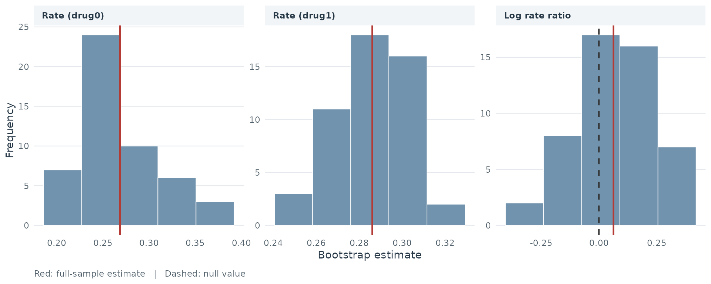
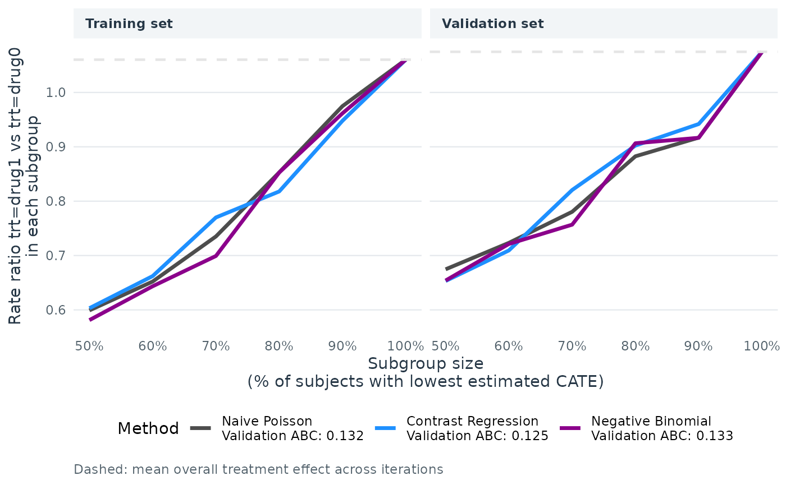
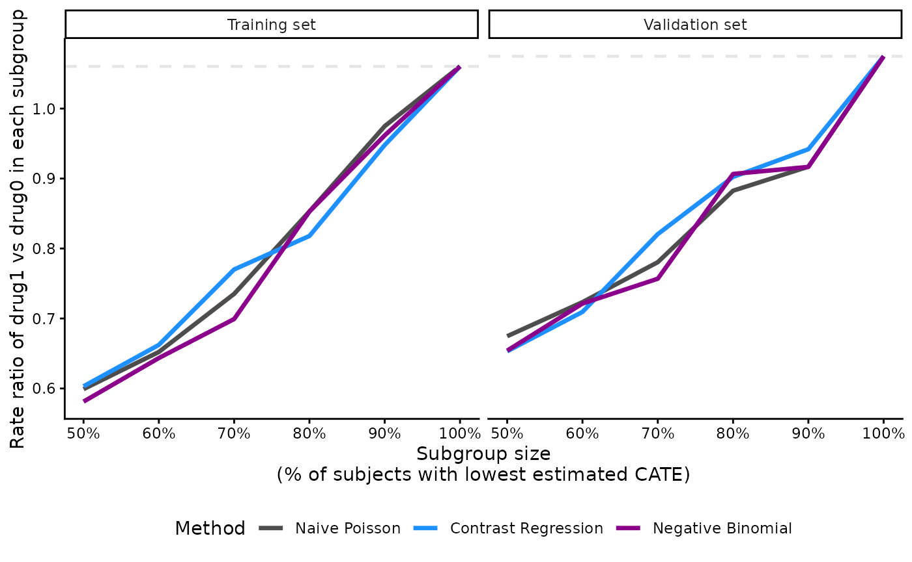
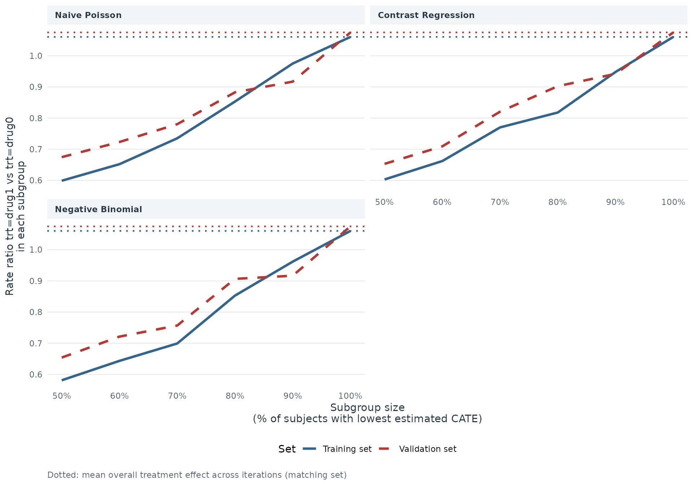
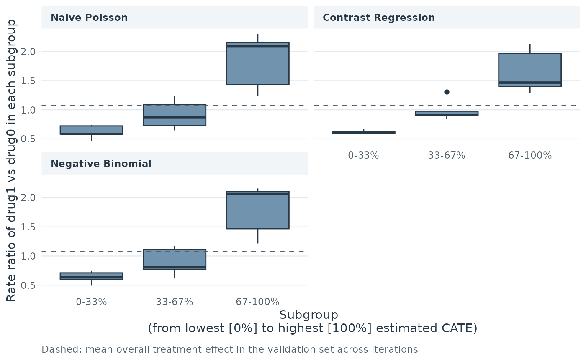

Estimating and validating treatment effects for count outcomes
Source:vignettes/Count-examples.Rmd
Count-examples.Rmd
This vignette demonstrates how to use precmed to
estimate average and conditional average treatment effects (ATEs and
CATEs) for count outcomes. Using simulated multiple sclerosis data, we
model relapse rates, compare CATE scoring methods through internal
validation, and interpret treatment effects in responder subgroups.
For background on CATE prediction and model development, see Chapter
17, “Introduction to methods for personalizing medicine” (Hoogland et al. 2026). Chapter 20,
“Visualization and interpretation of individualized treatment rule
results”, provides practical guidance on interpreting treatment rules
and responder diagnostics, including examples using precmed
(Jiang et al. 2026).
Example data
We consider a simulated dataset that is based on real-world claims
data from patients with multiple sclerosis. The dataset
countExample includes 4,000 patients with information on
the following 9 variables.
Alternatively, simulate_count(n = 4000, seed = 1)
generates a fully synthetic dataset with the same analysis variables.
Its treatment assignment, rate ratio, treatment interactions, follow-up
and count dispersion can be varied; see ?simulate_count.
The simulator uses illustrative assumptions and does not reconstruct the
claims data or the packaged example.
| level |
Overall (n = 4000) |
drug0 (n = 998) |
drug1 (n = 3002) |
|
|---|---|---|---|---|
| Age (mean (SD)) | 46.2 (9.8) | 46.1 (10.1) | 46.3 (9.7) | |
| Gender (%) | male | 987 (24.7) | 247 (24.7) | 740 (24.7) |
| female | 3013 (75.3) | 751 (75.3) | 2262 (75.3) | |
| Previous treatment (%) | drugA | 1787 (44.7) | 457 (45.8) | 1330 (44.3) |
| drugB | 435 (10.9) | 110 (11.0) | 325 (10.8) | |
| drugC | 1778 (44.5) | 431 (43.2) | 1347 (44.9) | |
| Previous medical cost ($) (mean (SD)) | 13823.8 (20172.3) | 14181.0 (21591.3) | 13705.1 (19680.3) | |
| Previous number of symptoms (%) | 0 | 332 ( 8.3) | 73 ( 7.3) | 259 ( 8.6) |
| 1 | 2669 (66.7) | 662 (66.3) | 2007 (66.9) | |
| >=2 | 999 (25.0) | 263 (26.4) | 736 (24.5) | |
| Previous number of relapses (%) | 0 | 2603 (65.1) | 646 (64.7) | 1957 (65.2) |
| 1 | 1114 (27.9) | 280 (28.1) | 834 (27.8) | |
| 2 | 245 ( 6.1) | 59 ( 5.9) | 186 ( 6.2) | |
| 3 | 32 ( 0.8) | 12 ( 1.2) | 20 ( 0.7) | |
| 4 | 4 ( 0.1) | 1 ( 0.1) | 3 ( 0.1) | |
| 5 | 2 ( 0.0) | 0 ( 0.0) | 2 ( 0.1) | |
| Number of relapses during follow-up (%) | 0 | 3086 (77.1) | 763 (76.5) | 2323 (77.4) |
| 1 | 640 (16.0) | 170 (17.0) | 470 (15.7) | |
| 2 | 173 ( 4.3) | 49 ( 4.9) | 124 ( 4.1) | |
| 3 | 54 ( 1.4) | 9 ( 0.9) | 45 ( 1.5) | |
| 4 | 30 ( 0.8) | 5 ( 0.5) | 25 ( 0.8) | |
| 5 | 8 ( 0.2) | 1 ( 0.1) | 7 ( 0.2) | |
| 6 | 5 ( 0.1) | 1 ( 0.1) | 4 ( 0.1) | |
| 7 | 2 ( 0.0) | 0 ( 0.0) | 2 ( 0.1) | |
| 8 | 2 ( 0.0) | 0 ( 0.0) | 2 ( 0.1) | |
| Length of follow-up (years) (mean (SD)) | 1.2 (1.2) | 1.2 (1.3) | 1.2 (1.2) |
Most variables are baseline patient characteristics like age, gender, and previous treatment.
We will use
yas the count outcome variable, which is the number of relapses during follow-up.We will use
yearsas the offset variable, which is number of years during follow-up.We will use
trtas the treatment variable, which has 2 drugs (drug0 and drug1).
For convenience, age is centered at 48 years and
previous_cost is centered at 13,824 USD and divided by
20,172 USD.
Estimate the average treatment effect
For the estimators and their assumptions, see Methods for estimating average treatment effects.
Unadjusted treatment comparison
We first compare relapse rates between treatment groups using a Poisson model with treatment as the only predictor. The log follow-up time is included as an offset to account for differences in exposure. This unadjusted association does not account for differences in patient characteristics.
output_poisson <- glm(y ~ trt + offset(log(years)),
data = countExample, family = poisson())
summary(output_poisson)
#>
#> Call:
#> glm(formula = y ~ trt + offset(log(years)), family = poisson(),
#> data = countExample)
#>
#> Coefficients:
#> Estimate Std. Error z value Pr(>|z|)
#> (Intercept) -1.32370 0.05538 -23.900 <2e-16 ***
#> trtdrug1 0.07293 0.06346 1.149 0.25
#> ---
#> Signif. codes: 0 '***' 0.001 '**' 0.01 '*' 0.05 '.' 0.1 ' ' 1
#>
#> (Dispersion parameter for poisson family taken to be 1)
#>
#> Null deviance: 3294.4 on 3999 degrees of freedom
#> Residual deviance: 3293.1 on 3998 degrees of freedom
#> AIC: 5350.4
#>
#> Number of Fisher Scoring iterations: 6The estimated rate ratio for drug 1 versus drug 0 is 1.08. A ratio below 1 corresponds to a lower relapse rate under drug 1. This association does not by itself establish a causal treatment effect.
Covariate-adjusted treatment comparison
Treatment assignment may differ according to baseline characteristics. To account for measured differences, we fit a Poisson model that adjusts for age, sex, previous treatment, previous medical cost and previous relapses, while retaining the follow-up offset.
output_poisson_adjusted <- glm(
y ~ trt + age + female + previous_treatment + previous_cost +
previous_number_relapses + offset(log(years)),
data = countExample, family = poisson()
)
summary(output_poisson_adjusted)
#>
#> Call:
#> glm(formula = y ~ trt + age + female + previous_treatment + previous_cost +
#> previous_number_relapses + offset(log(years)), family = poisson(),
#> data = countExample)
#>
#> Coefficients:
#> Estimate Std. Error z value Pr(>|z|)
#> (Intercept) -2.119915 0.093376 -22.703 < 2e-16 ***
#> trtdrug1 0.074697 0.063503 1.176 0.2395
#> age -0.015082 0.002723 -5.540 3.03e-08 ***
#> female 0.483290 0.072830 6.636 3.23e-11 ***
#> previous_treatmentdrugB 0.828678 0.078981 10.492 < 2e-16 ***
#> previous_treatmentdrugC 0.404501 0.060730 6.661 2.73e-11 ***
#> previous_cost -0.070031 0.031698 -2.209 0.0272 *
#> previous_number_relapses 0.189551 0.035005 5.415 6.13e-08 ***
#> ---
#> Signif. codes: 0 '***' 0.001 '**' 0.01 '*' 0.05 '.' 0.1 ' ' 1
#>
#> (Dispersion parameter for poisson family taken to be 1)
#>
#> Null deviance: 3294.4 on 3999 degrees of freedom
#> Residual deviance: 3071.2 on 3992 degrees of freedom
#> AIC: 5140.5
#>
#> Number of Fisher Scoring iterations: 6The adjusted rate ratio is 1.08, compared with 1.08 in the unadjusted model. The adjusted ratio is conditional on the included covariates and does not necessarily represent a causal average treatment effect. A causal interpretation requires, among other assumptions, adequate treatment overlap and no unmeasured confounding.
Population-level treatment comparison using
atefit()
We now use atefit() to estimate a population-level rate
ratio, combining outcome and treatment models. The treatment model
estimates the propensity score, the probability of receiving treatment 1
given the covariates. The rate ratio estimator is doubly robust, meaning
that the estimator is consistent if the treatment model (argument
ps.model) or the outcome model (argument
cate.model) or both are correctly specified, under the
required assumptions. The function also provides standard errors,
confidence intervals and p-values based on bootstrap.
In this example, the rate ratio compares the relapse rate under drug 1 with that under drug 0; a rate ratio below 1 favors drug 1. A causal interpretation requires appropriate assumptions, including no unmeasured confounding, adequate overlap in treatment assignment, and well-defined treatments. Chapter 5 introduces marginal and conditional treatment effects (Nguyen et al. 2026).
The mandatory arguments for atefit() are:
response: “count” in this example because we use have data with a count outcome (e.g., number of relapses))data: the name of the data set. (countExample)cate.model: A formula describing the outcome model to be fitted. The outcome must appear on the left-hand side. In the example, we choose to specify to outcome model as a linear combination of the following covariates: age, sex, previous treatment, medical costs in the year prior to treatment initiation, and number of relapses in the year prior to treatment initiation. Non-linear or interaction terms could also be included. The outcome model has the offsetlog(years)to account for the varying exposure times across patients. Note that the treatment variable is not supplied incate.modelsince this is an outcome model.
-
ps.model: A formula describing the treatment model to be fitted. The treatment must appear on the left-hand side and the covariates (age and previous treatment in this example) on the right-hand side. The variabletrtmust be supplied as a numeric variable taking only 2 values, 1 for active treatment and 0 for control or comparator. If it is not the case, the function will stop with error iftrttakes more than 2 distinct values or will automatically transformtrtinto a numeric variable. In this example,trt(a factor variable taking values “drug0” and “drug1”) was transformed and an informational message is shown (see output below):Variable trt was recoded to 0/1 with drug0->0 and drug1->1. If the data are from a RCT, it suffices to specifyps.model= trt ~ 1. The treatment model is used to estimate overall and subgroup average treatment effects. It is also used to fit the doubly robust two-regression and contrast-regression CATE scores; other scoring methods need not use it to construct their scores.
Let’s calculate the ATE for the effect of treatment on y and build an
outcome model that contains all variables and a treatment model with
age and previous_treatment.
output_atefit <- atefit(
response = "count",
data = countExample,
cate.model = y ~ age + female + previous_treatment +
previous_cost + previous_number_relapses + offset(log(years)),
ps.model = trt ~ age + previous_treatment,
n.boot = 50,
seed = 999,
verbose = 0
)
#> Variable trt was recoded to 0/1 with drug0->0 and drug1->1.When verbose = 1, the function outputs a progress bar in
the console.
output_atefit
#> Average treatment effect:
#>
#> estimate SE CI.lower CI.upper pvalue
#> log.rate.ratio 0.06311746 0.1624482 -0.2552752 0.3815101 0.6976173
#>
#> Estimated event rates:
#>
#> estimate
#> rate1 0.2860635
#> rate0 0.2685660
#> Variable trt was recoded to 0/1 with drug0->0 and drug1->1.The output of atefit() shows the point estimate,
standard error (“SE”), lower (“CI.lower”) and upper (“CI.upper”) bound
of the 95% confidence interval, and the p-value (“pvalue”) for the log
rate ratio ($log.rate.ratio) as well as the point estimate
for the rate in the 2 treatment groups ($rate0 and
$rate1). For example, the log rate ratio of 0.06 and the
95% confidence interval of (-0.26, 0.38) are displayed in the output.
Use coef() and confint() to extract the log
rate ratio and its confidence interval, then exponentiate them to obtain
the rate ratio and its interval. The default confidence level is 95%;
specify level, for example level = 0.90, to
request a different level. Intervals use the bootstrap standard error
already stored in the fitted object:
rate.ratio <- unname(exp(coef(output_atefit)))
rate.ratio
#> [1] 1.065152
CI.rate.ratio <- exp(confint(output_atefit, level = 0.95))[1, ]
CI.rate.ratio
#> 2.5 % 97.5 %
#> 0.7747033 1.4644945The rate ratio of 1.07 along with the 95% confidence interval of
(0.77, 1.46) indicate a higher estimated relapse rate under drug 1 than
drug 0. However, the confidence interval includes 1, so there is
insufficient evidence of a treatment difference, consistent with the
p-value of 0.7 in the output ($log.rate.ratio$pvalue).
plot(output_atefit) displays all available metrics by
default: the bootstrap estimates of the rate for each treatment and the
log rate ratio. The metrics argument selects and orders
these panels. Solid red lines mark the full-sample estimates, and the
dashed black line marks the null value of 0 in the log-ratio panel (a
rate ratio of 1). Set null.value to another value on the
log scale, or to NULL or NA to omit the null
line.

Bootstrap estimates of the treatment-specific rates and log rate ratio.
Estimate CATE scores
Now we have calculated the ATE we know the effect of both treatments
on average, but this effect might not be the same for all patients.
Thus, it might be worthwhile to check if there are subgroups that
respond differently to the treatments. We can calculate the Conditional
Average Treatment Effect (CATE) score which calculates the ATE for
different subgroups in the data. If no internal validation is needed (we
get back to that later), we can use the catefit() function
to a model directly to the entire data set to estimate the CATE score.
For the catefit() function we have to define the
score.method. This arguments specifies the precision
medicine (PM) method to be used to calculate the CATE scores. There are
a total of 5 scoring methods implemented:
poissonfits a Poisson model separately by treatment group.boostinguses gradient boosted regression models (GBM) separately by treatment group.twoRegimplements the doubly robust two regressions estimator in (Yadlowsky et al. 2021).contrastRegimplements the doubly robust contrast regression estimator from (Yadlowsky et al. 2021).negBinfits negative binomial regressions by treatment group. This method is recommended if there is overdispersion in the data.
When we have selected a PS method that fits the data (or multiple
methods), we can run the catefit() function with the same
variables as the atefit() function.
The score represents an estimated conditional log rate ratio:
exponentiating it gives the estimated rate ratio for patients with those
covariates. Lower scores therefore indicate greater estimated benefit
from drug 1 in this example. Chapter 17 describes treatment effect
heterogeneity and methods for CATE prediction (Hoogland et al. 2026). Because
catefit() fits the scores using the full dataset, its
results do not on their own establish performance in new patients.
The mandatory arguments are: response,
data, score.method, cate.model,
and ps.model. The user can also specify the non-mandatory
arguments to fit with the data and problem at hand. Please see the Function
description section for details.
If you run into errors or warnings with your data, it might be
helpful to go over the descriptions to see if you need to alter the
default values. We set n.cores = 1 to run boosting with one
thread. precmed translates this argument to the GBM3
parallel settings; one thread is also the fallback when neither
n.cores nor par.details is supplied and the
gbm.parallel option is unset.
output_catefit <- catefit(
response = "count",
data = countExample,
score.method = c(
"poisson", "boosting", "twoReg", "contrastReg", "negBin"
),
cate.model = y ~ age + female + previous_treatment +
previous_cost + previous_number_relapses + offset(log(years)),
ps.model = trt ~ age + previous_treatment,
initial.predictor.method = "poisson",
higher.y = FALSE,
seed = 999,
n.cores = 1
)
#> Variable trt was recoded to 0/1 with drug0->0 and drug1->1.Each method specified in score.method has the following
sets of results in catefit():
-
scorecontains the log-transformed estimated CATE scores for each subject. CATE score is a linear combination of the variables specified in thecate.modelargument. Same as the outcome, lower CATE scores are more desirable ifhigher.y= FALSE and vice versa. Each subject has one CATE score so the length of this output is 4,000 for our toy example. Below we show the CATE scores estimated with contrast regression for the first 6 subjects in the data.
length(output_catefit$score.contrastReg)
#> [1] 4000
head(output_catefit$score.contrastReg)
#> [1] 0.1223985 0.2463684 0.5284533 -0.8525778 -0.1547064 -0.3700220-
coefficientscontains the estimated coefficients of the CATE score for each scoring method. It is a data frame of the covariates (including intercept) as rows and scoring methods as columns. In our toy example, there are 5 covariates in thecate.model(including a categorical variable with 3 distinct factors) so there are 7 rows of estimated coefficients within each column. Since contrast regression is one of the scoring methods specified in the example, we see that contrast regression has an additional column with the standard errors of the estimated coefficients. Boosting does not estimate coefficients (it directly predicts the score) so there is no coefficient result for this method.
output_catefit$coefficients
#> poisson twoReg contrastReg SE_contrastReg
#> (Intercept) -0.58185218 -0.56778393 -0.60435660 0.36100821
#> age -0.01117701 -0.04025351 -0.03586527 0.01320552
#> female 0.58829733 0.73513308 0.75637775 0.35381160
#> previous_treatmentdrugB 0.73724361 0.63387929 0.78891625 0.32100476
#> previous_treatmentdrugC 0.15545985 -0.26859734 -0.15584596 0.24006620
#> previous_cost -0.13035642 -0.08233598 -0.07600948 0.12046915
#> previous_number_relapses -0.05339112 0.06949513 -0.03062952 0.13592481
#> negBin
#> (Intercept) -0.59232437
#> age -0.01410487
#> female 0.59602219
#> previous_treatmentdrugB 0.76032497
#> previous_treatmentdrugC 0.13262969
#> previous_cost -0.13952096
#> previous_number_relapses -0.05034136We can define the estimated CATE scores for contrast regression like shown below. The user can use this information to study the influence of each covariate.
-
atecontains estimated ATEs in each nested subgroup of high responders to drug 1 defined byprop.cutoff. The subgroups are defined based on the estimated CATE scores with the specified scoring method. In this example, we show the estimated ATEs of subgroups identified by CATE scores of contrast regression. For example, the estimated ATE for the subgroup of subjects constructed based on the 50% (“prop0.5”) lowest CATE scores estimated from contrast regression is 0.58.
output_catefit$ate.contrastReg
#> prop0.5 prop0.6 prop0.7 prop0.8 prop0.9 prop1
#> 0.5802533 0.6538656 0.7709702 0.8185615 0.9570745 1.0640579Visualize the distribution of CATE scores
The distribution shows how much the estimated scores vary across patients and methods. Variation in predictions alone does not establish that treatment effects truly differ; validation is needed to assess whether the scores distinguish responder groups. Chapter 20 discusses score distributions alongside validation curves (Jiang et al. 2026).
You are encouraged to summarize and visualize the outputs in
whichever way that fits a particular situation outside the package’s
functions. For example, it is possible to plot the densities of all CATE
scores with ggplot(). There are some subjects with
extremely low CATE scores but most of the samples fall between -1 and 1
with triple modes at around -0.5, 0, and 0.8.
dataplot <- data.frame(
score = factor(rep(
c("Boosting", "Naive Poisson", "Two regressions", "Contrast regression",
"Negative Binomial"),
each = length(output_catefit$score.boosting)
)),
value = c(
output_catefit$score.boosting, output_catefit$score.poisson,
output_catefit$score.twoReg, output_catefit$score.contrastReg,
output_catefit$score.negBin
)
)
ggplot(dataplot, aes(x = value, fill = score)) +
geom_density(alpha = 0.5) +
theme_classic() +
labs(x = "Estimated CATE score", y = "Density", fill = "Method")
Internally validate CATE scores
How internal validation works
For broader guidance on validation strategies and the assessment of discrimination, calibration, and decision accuracy, see Chapter 19, “Validation of prediction models for patient outcomes and individualized treatment effect” (Thao et al. 2026).
In each iteration, the models are fitted in a training set and their scores are evaluated in a separate validation set. For example, the 50% of validation patients with the lowest predicted scores form a high-responder subgroup, and its estimated treatment effect can be compared with the overall effect. Repeating the split shows how results vary across iterations. Selecting the best method using these same validation results can make its reported performance optimistic; an independent evaluation is useful for assessing the selected method.
The catecv() function provides the same estimation as
the catefit() but via cross-validation (CV). With the
catecv() function internal CV is applied to reduce optimism
in choosing the CATE estimation method that captures the most treatment
effect heterogeneity. The CV is applied by repeating the following steps
cv.n times:
Split the data into a training and validation set according to
train.propargument. The training and validation sets must be balanced with respect to covariate distributions and doubly robust rate ratio estimates (seeerror.maxargument).Estimate the CATE score in the training set with the specified scoring method.
Predict the CATE score in the validation set using the scoring model fitted from the training set.
-
Build nested subgroups of treatment responders in the training and validation sets, separately, and estimate the ATE within each nested subgroup. For each element i of
prop.cutoffargument (e.g.,prop.cutoff[i] = 0.6), take the following steps:Identify high responders as observations with the 60% (i.e.,
prop.cutoff[i]x100%) highest (ifhigher.y = TRUE) or lowest (ifhigher.y = FALSE) estimated CATE scores.Estimate the ATE in the subgroup of high responders using a doubly robust estimator.
Conversely, identify low responders as observations with the 40% (i.e.,
1 - prop.cutoff[i]x100%) lowest (ifhigher.y = TRUE) or highest (ifhigher.y = FALSE) estimated CATE scores.Estimate the ATE in the subgroup of low responders using a doubly robust estimator.
If
abc = TRUE, calculate the area between the ATE and the series of ATEs in nested subgroups of high responders in the validation set. (for more information about the abc score, see Validation curves and the ABC statistics)Build mutually exclusive subgroups of treatment responders in the training and validation sets, separately, and estimate the ATE within each subgroup. Mutually exclusive subgroups are built by splitting the estimated CATE scores according to prop.multi.
Run internal validation
Now we can use the catecv() function to run internal
validation to compare the different scoring methods. The mandatory
arguments are similar to atefit() and
catefit(): The mandatory arguments are:
response, data, score.method,
cate.model, and ps.model. For this toy example
we selected poisson, contrastReg and
negBin to limit run time.
We also specified the following non-mandatory arguments to fit with
the data and problem at hand: initial.predictor.method,
higher.y, cv.n, seed and
plot.gbmperf.
initial.predictor.methodspecifies how predictions of the outcome are estimated in two regressions and contrast regression. Flexible models can be used such as GBM (“boosting”) or generalized additive models (“gam”). Both methods are computationally intensive so we choose “poisson” to obtain predictions from a Poisson regression, which reduces the computational time at the expense of stricter parametric assumptions and less flexibility.higher.ywas set to FALSE because lower number of relapses are more desirable in our example. Hence, we are telling the function that subgroups of high responders to drug1 vs drug0 should have lower number of relapses (see section Validation curves and the ABC statistics for illustration). In other situation, higher outcomes may be more favorable, for example, walking more steps in a study on physical activity. It is important for this argument to match with theyoutcome because it will affect how the subgroups are defined by the CATE scores and the performance metrics.We perform 5 CV iterations by specifying
cv.n= 5. Typically, more CV iterations are desirable although associated with longer computational times.We set a random seed
seed= 999 to reproduce the results.We avoid generating the boosting performance plots by specifying
plot.gbmperf= FALSE.
There are many other non-mandatory arguments that
catecv() can accept. Please see the Customizing CATE models and
validation vignette for more examples and the Function
description section for details. If you run into errors or warnings
with your data, it might be helpful to go over the descriptions to see
if you need to alter the default values. In this toy example, we keep
the default values of the remaining arguments.
output_catecv <- catecv(
response = "count",
data = countExample,
score.method = c("poisson", "contrastReg", "negBin"),
cate.model = y ~ age + female + previous_treatment +
previous_cost + previous_number_relapses + offset(log(years)),
ps.model = trt ~ age + previous_treatment,
initial.predictor.method = "poisson",
higher.y = FALSE,
cv.n = 5,
seed = 999,
plot.gbmperf = FALSE
)
#> Variable trt was recoded to 0/1 with drug0->0 and drug1->1.Inspect validation results
The output of catecv() is an object of class “precmed”
and here we named it output_catecv. It carries the relevant
information to use in the next step of the workflow which selects the
method (among those specified in the argument score.method)
capturing the highest level of treatment effect heterogeneity. The
output, which is described below, will be used in the functions
abc(), plot() and boxplot().
For each method specified in the argument score.method,
the following 3 groups of outputs are generated: high,
low and group. We use the results from
contrastReg as an example.
Nested subgroups of high responders
This output stores the ATEs - the ratio of annualized relapse rate
between drug1 vs drug0 in this example - in nested subgroups of patients
of high responders to drug 1 in the training
($ate.est.train.high.cv) and validation
($ate.est.valid.high.cv) sets across all CV iterations. For
count outcomes, when higher.y = TRUE, higher CATE scores
correspond to high responders to drug1. When higher.y =
FALSE, lower CATE scores correspond to high responders to drug1. Note
that this is different for survival outcomes. The direction of CATE
scores depends on both higher.y and outcome type.
output_catecv$ate.contrastReg$ate.est.train.high.cv
#> cv1 cv2 cv3 cv4 cv5
#> prop0.5 0.6125203 0.6352505 0.5639550 0.6292319 0.5745308
#> prop0.6 0.6354691 0.6965326 0.6101321 0.6748155 0.6940573
#> prop0.7 0.7451821 0.8142459 0.7558228 0.7635837 0.7714710
#> prop0.8 0.7826935 0.8677195 0.8190230 0.8538577 0.7662717
#> prop0.9 0.8857736 0.9977592 0.9484942 0.9689973 0.9385940
#> prop1 1.0599740 1.0520675 1.0577453 1.0641114 1.0677619
output_catecv$ate.contrastReg$ate.est.valid.high.cv
#> cv1 cv2 cv3 cv4 cv5
#> prop0.5 0.7311677 0.6043823 0.7529942 0.5478392 0.6293874
#> prop0.6 0.8000372 0.7004678 0.7960390 0.5956396 0.6547416
#> prop0.7 0.9369608 0.7707901 0.8355227 0.8042829 0.7552522
#> prop0.8 1.0871104 0.8248842 0.8341719 0.9117819 0.8535701
#> prop0.9 1.0802617 0.8014013 0.9334663 0.9079556 0.9866164
#> prop1 1.0812603 1.0978549 1.0531927 1.0726353 1.0689638The output is a matrix with columns corresponding to the CV
iterations, labeled from 1 to cv.n, and rows corresponding
to nested subgroups. The nested subgroups of patients are defined by the
argument prop.cutoff. Here, we use the default
seq(0.5, 1, length = 6) which defines 6 nested subgroups
with the 50%, 60%, 70%, 80%, 90% and 100% lowest (highest if
higher.y = TRUE) CATE scores estimated by contrast
regression. The rows in the output are labeled to reflect the
user-specified proportions used to build the subgroups.
For example, in the training set and in the first CV iterations (first column labeled “cv1”), the subgroup defined with the 50% lowest CATE scores (first row labeled “prop0.5”) has an estimated RR of 0.613. In contrast, the subgroup defined with all patients (last row labeled “prop1”) has an estimated RR of 1.06.
Nested subgroups of low responders
This output stores the ATEs in nested subgroups of low
responders to drug1 in the training
($ate.est.train.low.cv) and validation
($ate.est.valid.low.cv) sets across all CV iterations. For
count outcomes, when higher.y = TRUE, lower CATE scores
correspond to low responders to drug1. When higher.y =
FALSE, higher CATE scores correspond to low responders to drug1. Again,
this is different for survival outcomes. The direction of CATE scores
depends on both higher.y and outcome type.
output_catecv$ate.contrastReg$ate.est.train.low.cv
#> cv1 cv2 cv3 cv4 cv5
#> prop0.5 1.620139 1.602498 1.697586 1.567210 1.711755
#> prop0.4 1.877926 1.629831 1.879557 1.629753 1.636678
#> prop0.3 1.890165 1.614336 1.757029 1.689462 1.720674
#> prop0.2 2.344703 1.867807 2.032254 1.843133 2.430757
#> prop0.1 2.259441 1.423523 1.875834 1.680824 2.318978The outputs are also matrices with columns corresponding to the CV iterations and rows corresponding to nested subgroups.
The output for the low responders brings additional information to
the user. It gives the ATEs in the complement of each nested subgroup of
high responders. For example, the complement of the subgroup of high
responders defined as patients with the 60% lowest (highest if
higher.y = TRUE) estimated CATE scores is the subgroup low
responders defined as patients with the 40% highest (lowest if
higher.y = TRUE) estimated CATE scores, labeled as
“prop0.4”. In the training set and in the first CV iterations, the
estimated RR is 0.635 in the 60% high responders to drug 1 and 1.878 in
the 40% low responders.
Mutually exclusive subgroups
This output stores the ATEs in mutually exclusive multi-category
subgroups of patients in the training
($ate.est.train.group.cv) and validation
($ate.est.valid.group.cv) sets across all CV
iterations.
output_catecv$ate.contrastReg$ate.est.train.group.cv
#> cv1 cv2 cv3 cv4 cv5
#> prop0.33 1.8256926 1.6013361 1.8965411 1.6739862 1.6308308
#> prop0.67 1.0603708 1.2529668 0.9926959 1.1134701 1.0786287
#> prop1 0.4956232 0.4939226 0.4729564 0.5167835 0.5607068
output_catecv$ate.contrastReg$ate.est.valid.group.cv
#> cv1 cv2 cv3 cv4 cv5
#> prop0.33 1.2906594 1.9702555 1.4029576 1.4667778 2.1290327
#> prop0.67 1.3056454 0.8357763 0.9766351 0.9076750 0.9125326
#> prop1 0.5953497 0.6296901 0.6691813 0.6195591 0.5786599The output is a matrix with columns corresponding to the CV
iterations and rows corresponding to the mutually exclusive subgroups.
The previous 2 outputs only focus on binary subgroups (high or low
responders). Here, the mutually exclusive subgroups can be more than 2
and are defined by the argument prop.multi. We use the
default c(0, 1/3, 2/3, 1) which defines 3 subgroups of
patients with the 33% lowest, 33% middle and 33% highest estimated CATE
scores when higher.y = FALSE (as in this example), or with
the 33% highest, 33% middle and 33% lowest estimated CATE scores when
higher.y = TRUE. Taking the first column as an example, the
first CV iteration calculated 1.826 as the RR for the subgroup with the
33% lowest estimated CATE scores, 1.06 as the RR for subgroup with the
33% middle estimated CATE scores, and 0.496 as the RR for subgroup with
the 33% highest estimated CATE scores.
Inspect errors and warnings
Subgroup estimates can be missing or unstable, for example when a
subgroup has few patients or observed events. Tied scores can also leave
a subgroup empty or change its size from the requested proportion. Use
diagnostics() to inspect recorded subgroup errors,
warnings, unavailable ABC values and contrast-regression convergence
across methods, splits and iterations. An empty table means no such
messages were recorded; it does not establish that the models fit
well.
diagnostics(output_catecv)
#> [1] method split iteration group subgroup type measure
#> [8] message
#> <0 rows> (or 0-length row.names)The support table records the number of patients (n0,
n1) and total observed relapses (events0,
events1) in each treatment arm for each reported subgroup.
For example, inspect the first six validation-set support records for
contrast regression with:
head(subset(output_catecv$subgroup.support,
split == "validation" & method == "contrastReg",
select = c(iteration, group, subgroup, n0, n1, events0, events1)))
#> iteration group subgroup n0 n1 events0 events1
#> 57 1 high 1 250 750 78 229
#> 58 1 high 0.5 128 372 35 83
#> 59 1 low 0.5 122 378 43 146
#> 60 1 high 0.6 149 451 40 115
#> 61 1 low 0.4 101 299 38 114
#> 62 1 high 0.7 179 521 44 137The contrast-regression convergence vector indicates whether at least
one cross-fitting repetition converged in each CV iteration. The
individual repetition results are available in
output_catecv$ate.contrastReg$converge.repetitions.cv.
Compare scoring methods using the ABC statistic
The ABC statistics is calculated by abc() for each
scoring method specified in catecv() and for each of the
cv.n CV iterations using the output object
output_catecv from catecv().
Each validation curve summarizes estimated treatment effects in
nested high-responder groups, from a smaller group with more favorable
scores to the entire validation set. The ABC summarizes the area between
that curve and the overall ATE reference line; a higher value indicates
greater separation in the expected direction for this example. Chapter
20 describes this responder diagnostic and its interpretation (Jiang et al. 2026). See the Validation curves and the ABC
statistics section for a detailed illustration of the relationship
between higher.y, abc, and the validation
curves.
abc(output_catecv)
#> cv1 cv2 cv3 cv4 cv5
#> poisson 0.13758995 0.2236276 0.06938081 0.09647510 0.1304204
#> contrastReg 0.06273854 0.1762192 0.09212742 0.15117033 0.1386554
#> negBin 0.14517127 0.2203584 0.08899030 0.09382214 0.1395976The output is a matrix with columns corresponding to the CV
iterations and rows corresponding to the scoring methods specified in
score.method. Individual iterations can differ; summarize
across iterations to compare methods:
abc(output_catecv, combine = "mean")
#> poisson contrastReg negBin
#> 0.1314988 0.1241822 0.1375879In this example, negative binomial also offers the best overall performance because it has the highest average ABC, followed closely by Poisson.
Assess responder discrimination with validation curves
Chapter 20 discusses validation curves, ABC statistics, and their interpretation as responder diagnostics (Jiang et al. 2026). These summaries assess how well a score ranks patients by treatment benefit; they do not, by themselves, establish calibration of the predicted CATEs or the clinical value of a treatment rule (Thao et al. 2026).
The ATEs of nested subgroups of high responders to drug1 (e.g.,
output_catecv$ate.contrastReg$ate.est.train.high.cv and
output_catecv$ate.contrastReg$ate.est.valid.high.cv for
contrast regression) can be visualized as a side-by-side line plot, with
training results on the left and validation results on the right. The
x-axis is determined by prop.cutoff and the y-axis is the
estimated ATEs averaged over cv.n CV iterations as
specified by cv.i = NULL. The estimated ATE is expressed as
a RR of drug1 versus drug0 for our toy example. By default, the function
retrieves the name of the treatment variable (trt) and the
original labels (drug0 and drug1) to specify a
meaningful y-axis label. Otherwise, it is possible to customize the
y-axis label via the ylab, for example, by using
Rate ratio of drug1 vs drug0 in each subgroup.
Steeper slopes indicate more treatment effect heterogeneity between
drug1 and drug0. Because higher.y = FALSE in this example,
the slopes should be increasing from left (prop.cutoff =
0.5) to right (prop.cutoff = 1) if treatment effect
heterogeneity is present. The method that has the steepest slope in the
validation results would be selected because it captures the most
treatment effect heterogeneity while generalizing well to unseen
data.
plot(output_catecv)
For this toy example, the methods are performing well in the training
data as per the steep, increasing slopes on the left plot. The generally
increasing curves in the validation data (right plot) are consistent
with the scores ranking patients by treatment benefit in this example,
although they do not alone establish generalizability or calibration.
The dashed gray line is the ATE in the entire data set, which is why all
lines merge to this reference line when subgroup size is 100% of the
data (prop.cutoff = 1). For more explanation on the
validation curves, see the Function
description section.
The plot’s legend includes the ABC statistics in the validation set.
The user can choose to mute the ABC annotations by specifying
show.abc = FALSE.

To compare training and validation curves directly for each scoring
method, use layout = "method". Each panel shows one method,
with a solid training curve and a dashed validation curve. The dotted
lines mark the corresponding overall treatment effects.
plot(output_catecv, layout = "method", show.abc = FALSE,
ylab = "Rate ratio of drug1 vs drug0 in each subgroup")
To plot validation curves for a single CV iteration instead of the
average, specify cv.i (for example, cv.i = 2
for the second iteration). Set grayscale = TRUE to display
the curves in grayscale.
Same as abc(), the user can also choose to use the
median (instead of mean [default]) of the ATEs across CV iterations by
specifying the argument combine = “median” in
plot().
Compare treatment effects across responder subgroups
Unlike the nested groups in the validation curves, these groups are mutually exclusive: each patient belongs to one score-based group in a given validation iteration. Each box summarizes the variation in that group’s estimated treatment effect across iterations. Chapter 20 compares these complementary responder diagnostics (Jiang et al. 2026).
The ATEs of multi-category subgroups that are mutually exclusive can
be visualized as box plots, with one box plot for each scoring method.
Only validation results are visualized here. The x-axis is determined by
prop.multi and the y-axis is the estimated ATEs in each
subgroup. We specify the ylab argument accordingly. The
subgroups correspond to each row of the
ate.est.valid.group.cv result in
output_catecv, so in this example the subgroups are patient
with the 33% lowest (0-33%), middle 33% (33-66%), and highest 33%
(66-100%) estimated CATE scores. The box plot shows the distribution of
the ATEs over all cv.n CV iterations, instead of a summary
statistics like mean or median in plot().
boxplot(output_catecv,
ylab = "Rate ratio of drug1 vs drug0 in each subgroup")
The box plots compare estimated rate ratios across mutually exclusive score-based subgroups. Read them alongside the validation curves and ABC statistics to assess how each scoring method separates patients by treatment benefit and how estimates vary across CV iterations. Note that the y-axis can have different scales for different scoring methods.
Although we provided 3 different metrics to summarize and visualize the
catecv()outputs, the user is encouraged to choose their own way of data wrangling that fits to their particular situation.